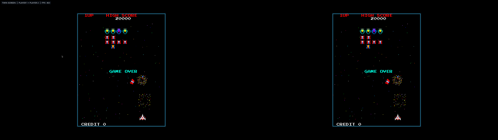
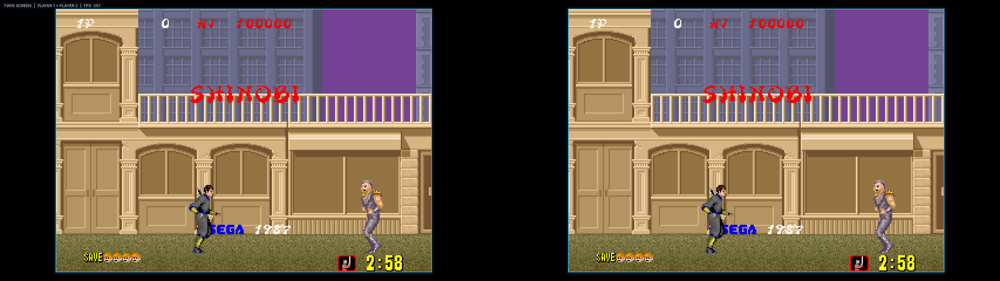

Native cabinet link
Sega Rally Championship
Two real emulated Model 2 cabinets can race through Sega’s original link protocol.
Focused arcade emulation for Windows + Linux
WhittyArcade brings a hand-picked mix of Namco, Sega and Capcom arcade games into one launcher—with correct screen shapes, remappable controls, operator tools and two-player networking built in.
Ridge Racer · live capture from the current WhittyArcade build
Real games, real captures
Each screenshot below comes from WhittyArcade itself. The same app moves between 3D racers, light-gun cabinets and classic vertical games without replacing the frontend.
Two real emulated Model 2 cabinets can race through Sega’s original link protocol.
The original vertical presentation is preserved instead of stretched to the host display.

Two bordered 224×288 player views on one 5120×1440 ultrawide display.

The same twin layout follows Shinobi’s 320×224 raster with one scale on both axes.
Several cabinets, one display
Two or three different games run side by side across one screen, each one a complete arcade board rather than a video of one. They all keep playing their attract modes; the cabinet you are at gets the larger pane, the sound and the controls, and moving between them re-sizes the wall as you go.
Every column owns its CPUs, texture memory, vertex buffers and audio device. Three Namco System 22 racers can run at once because none of them is sharing a renderer.
The played cabinet takes about half the display and the others share the rest. Click or tab across and the wall re-lays itself, with only the focused game audible.
Change the game in one column from inside the wall. That column rebuilds its board in place while its neighbours keep running.
The wall claims a free virtual desktop where one is available, so it never buries what you already had open.
Cover art first
The app opens on the games themselves. Sorting, hardware and publisher pages, and the two-player filters are all views over that same grid rather than menus standing in front of it.
Arcade title screens on every card, loaded from a local cache. One key changes the view; nothing sits between you and starting a game.
Flip through hardware families or publishers with the shoulder buttons. Each page carries the board's photo, its name, and its real hardware description behind an info button.
Alternating, simultaneous, twin screen, linked cabinets and network play each list only the games that genuinely support them.
Decoded high scores presented the way the machines did it, with the table building itself a row at a time.
Two apps, one shared launch
Open WhittyArcade on two computers. The apps find each other, decide who is Player 1 and Player 2, and show games installed at both ends.
Discovery starts automatically from the main menu.
No IP address, cabinet number or role selection is needed.
Player 1 selects from the shared installed-game list.
Player 2 follows automatically and uses their normal controls.
Sega Rally is the one title currently advertised as a true linked-cabinet game.
Both players see the same game and score. Control moves with the original game’s turn.
Both input sets are active every frame for games designed around two players at once.
No ultrawide stretching
Vertical and horizontal cabinets are fitted from their native framebuffer. Twin mode uses the same integer scale in both directions, then centres the result inside a visible player border.
Everything around the game
The frontend is built for sitting down with a controller. Everyday options live in the launcher or pause menu instead of being scattered across keyboard shortcuts.
Read merged, split or non-merged ZIPs, extracted sets and CHDs in place. No import, copy or repack step.
Resume, controls, display, DIP/operator settings, ROM selection and return-to-launcher in one place.
SDL gamepads, keyboard and mouse with hot-plug detection and per-device saved mappings.
Game-specific switches plus EEPROM and NVRAM handling, including Sega Rally cabinet roles.
Decoded and persistent score tables are keyed to the same stable game identity as saves and controls.
Boards rasterise straight into the presented image - no readback, no CPU rescale - with OpenGL kept as the fallback and as failover if a GPU device is lost.
Each cabinet keeps its own sound hardware path, from Namco wave sound to SCSP and C352 audio.
Return to the game selector and launch another board while the host window stays alive.
The idea behind it
WhittyArcade is not trying to contain every machine ever made. It gives a selected group of boards a common, purpose-built player and operator experience.
A Sega Model 2 board or Namco System 22 board owns the CPUs, video, sound and memory. A game profile tells that board which ROM layout, controls and cabinet behaviour to use.
That means adding another supported revision does not require inventing another frontend or copying an entire emulator driver. The launcher, pause menu, display fitting, storage and controller mapping stay consistent.
For normal network two-player games, Player 1 owns the authoritative arcade session and sends the final picture while Player 2 sends live controls back. Sega Rally is different: it genuinely runs two linked emulated cabinets.
Current working shelf
The focus is depth, not a huge compatibility number. Ridge Racer Full Scale is recognised but deliberately marked not working rather than shown as playable.
Ridge Racer, Ridge Racer 2, Rave Racer, Ace Driver, Victory Lap, Cyber Commando, Dirt Dash, Aqua Jet and Ridge Racer V: Arcade Battle.
Sega Rally Championship, Virtua Formula, Virtua Fighter, Star Wars Arcade and Wing War.
Time Crisis, Virtua Cop and Virtua Cop 2 with mouse and mapped controller input.
Galaga, Pac-Mania, Galaxian, Moon Cresta, UniWar S, Phoenix, Shinobi, Ghosts’n Goblins and Robotron: 2084.
Different goals, useful choices
MAME and FinalBurn Neo are not “worse versions” of WhittyArcade. They solve broader preservation and ecosystem problems. WhittyArcade chooses a smaller target and builds a dedicated experience around it.
| Area | WhittyArcade | MAME | FinalBurn Neo |
|---|---|---|---|
| Main goal | A curated arcade shelf with one player/operator frontend. | Preserve and document as much computer and arcade hardware as possible. | Broad, performance-focused arcade and multi-system emulation. |
| Catalog | 26 working sets with several Namco and Sega 3D boards. | A vast catalog covering many thousands of machines. | A much broader catalog than WhittyArcade, especially 2D systems. |
| Frontend | Built-in launcher, pause menu, ROM folders, high scores, cabinet and screen modes. | General machine UI with extensive configuration and debugging depth. | Standalone ports plus a widely used Libretro core. |
| ROM workflow | Reads supported current-MAME layouts directly from dedicated folders. | Strict audited sets for the selected MAME version. | Version-matched FBNeo sets with DAT/rebuild guidance. |
| Two players | Automatic two-app discovery, alternating/simultaneous network play and one native Sega Rally link. | Machine-dependent networking and broad input support. | RetroArch netplay is available through the Libretro ecosystem. |
| Best fit | You want this particular shelf and its built-in cabinet experience. | You need the broadest preservation scope or deep machine controls. | You want broad compatibility and RetroArch features. |
ROMs are not included
WhittyArcade reads files directly. A first-run wizard asks where your collection already lives; the paths can be changed later under Settings.
Select an existing ROM folder and an optional separate CHD folder. Nothing is imported or moved. These are simply the recommended defaults:
# Linux defaults
~/.local/share/WhittyArcade/roms/
~/.local/share/WhittyArcade/chd/
# Windows defaults
%LOCALAPPDATA%\WhittyArcade\roms
%LOCALAPPDATA%\WhittyArcade\chd
The native app uses CMake, SDL3, OpenGL/Vulkan and OpenAL. Build instructions and platform packages live in the repository.
cmake -S . -B build -DCMAKE_BUILD_TYPE=Release
cmake --build build --parallel
ctest --test-dir build --output-on-failure
./build/WhittyArcade --list-roms
./build/WhittyArcade --audit-roms